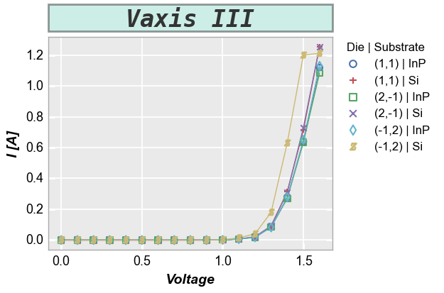

title¶
- fcp.titles()¶
Dummy function to return the figure title API with help() (not used directly for plotting).
- Keyword Arguments
title (str) – Figure title text. Defaults to None. More details
title_edge_alpha (float) – Transparency value for the title area edge between 0-1. Defaults to 1.
title_edge_color (str) – Hex color string for the title area edge. Defaults to #ffffff .
title_edge_width (float) – Width of the border edge of a title area in pixels. Defaults to 1.
title_fill_alpha (float) – Transparency value for the title area background fill between 0-1. Defaults to 1.
title_fill_color (str) – Hex color string for the title area edge. Defaults to #ffffff .
title_font (str) – Font for the figure title. Defaults to sans-serif. More details
title_font_color (str) – Hex color string for font color of the figure title. Defaults to #000000 .
title_font_size (str) – Font size for the figure title. Defaults to 18.
title_font_style (str) – Font style {‘normal’|’italic’|’oblique’} for the figure title. Defaults to italic. More details
title_font_weight (str) – Font weight {a numeric value in range 0-1000|’ultralight’|’light’|’normal’|’regular’|’b ook’|’medium’|’roman’|’semibold’|’demibold’|’demi’|’bold’|’heavy’|’extra bold’|’black’} for the figure title. Defaults to bold.
Examples
>>> import fivecentplots as fcp >>> from pathlib import Path >>> import pandas as pd >>> df = pd.read_csv(Path(fcp.__file__).parent / 'test_data' / 'fake_data.csv') >>> fcp.plot(df, x='Voltage', y='I [A]', legend=['Die', 'Substrate'], ax_size=[400, 300], filter='Target Wavelength==450 & Temperature [C]==25 & Boost Level==0.2', title='Vaxis III', title_edge_alpha=0.5, title_edge_color='#333333', title_edge_width=2, title_fill_alpha=0.2, title_fill_color='#00AA88', title_font='monospace', title_font_size=24, title_font_style='oblique', title_font_weight=700)
